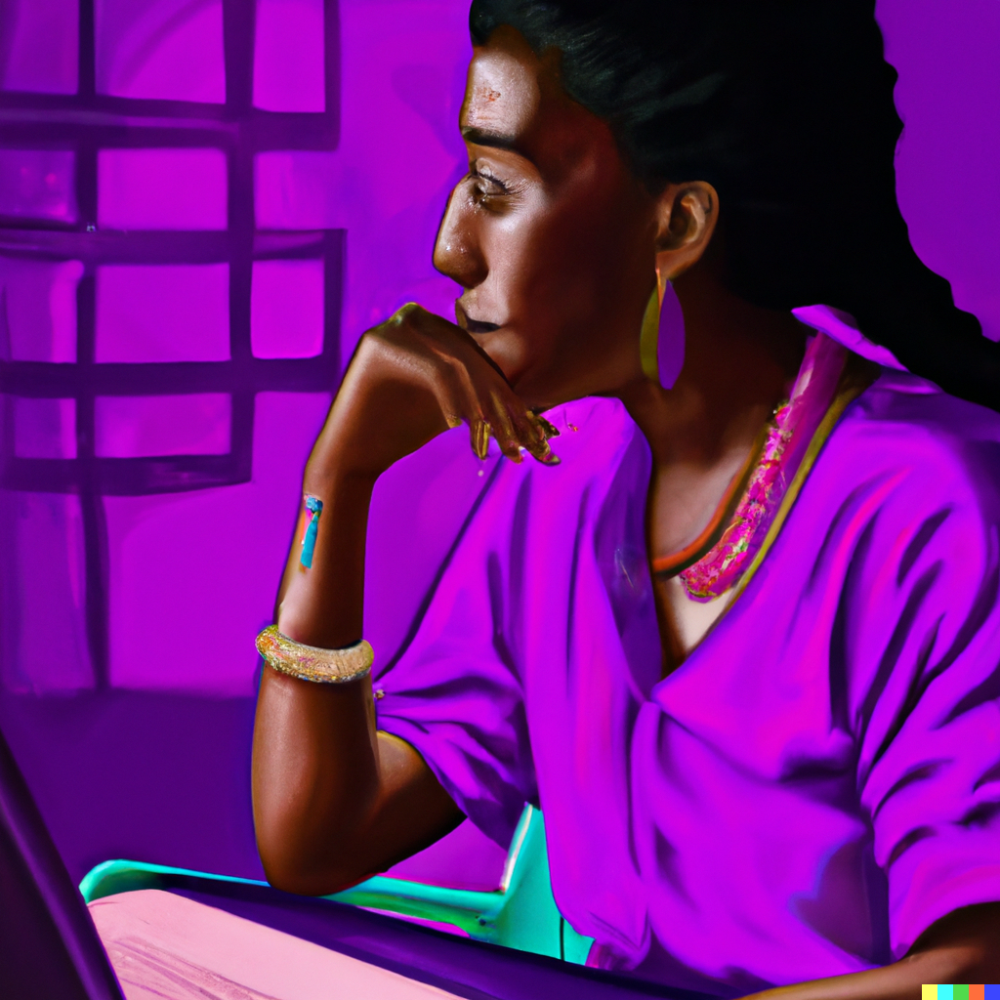

Web Development and UI Design in an Evolving Society
October 1, 2022 by Kimano Lambert
Web development and UI design are crucial in a technology culture that is constantly changing. New platforms and devices are continually being introduced as technology changes and advances. In order to be current and visible to their target audience, businesses must have a website that is responsive and adaptive to these changes.
A firm may stand out from the competition and draw in new consumers with a well-designed website. A well-designed, user-friendly website can contribute to the creation of a favourable impression of the company and increase the likelihood that customers will return in the future. In order to build a website that is suitable for the constantly evolving technological landscape, it is critical for businesses to stay current with the newest trends in web development and UI design.
The Implications of AI-Created Art on the Role of Today's Artists
October 2, 2022 by Kimano Lambert
The job of the artist is evolving in a world where artificial intelligence is increasingly being employed to produce works of art. Whereas formerly the artist was the sole originator of their work, AI is now capable of producing artwork that is interchangeable with that produced by humans. The value we place on art and the place of the artist in society are both affected by this. Art has always been about invention and expression, both of which AI is now capable of replicating. It will get more difficult to tell what was created by people and what was produced by robots as AI-generated art becomes more common. This could lead to a devaluation of art, as it becomes seen as something that can be created by anyone, not just those with the talent and creativity of an artist.
Moreover, this has effects on how the artist fits into society. The role of the artist will be reduced if it is no longer believed that creativity is necessary for art to exist. Artists will need to devise fresh strategies to add value to their work and establish their social standing. This might result in artists' prestige and the financing and support they get declining, as well. The effects of AI-driven artistic creation are substantial overall. The way we regard art and the place of the artist in society is evolving as a result. The worth of human-created art will be tougher to defend as AI art becomes more ubiquitous, and the place of the artist in society will change as a result.